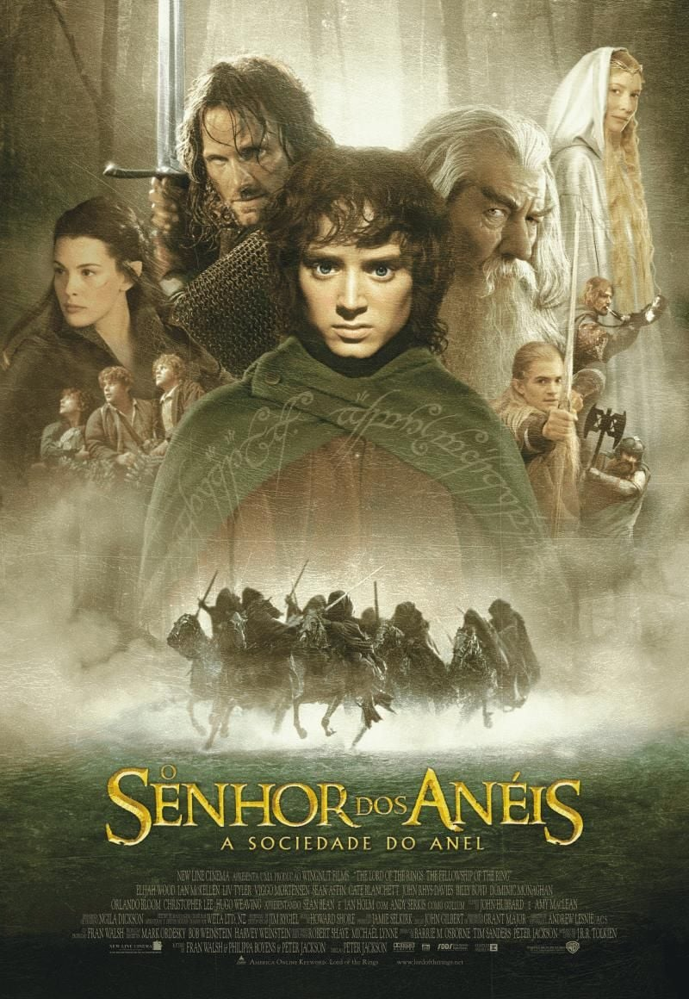

Senhor dos Anéis

Titulo Original:
The Lord of the Rings: The Fellowship of the Ring
Direção:
Peter Jackson
Lançamento:
2001
Duraçao:
178 min
Sinopse
Em uma terra fantástica e cheia de perigos, um jovem hobbit chamado Frodo Bolseiro recebe a missão de destruir um poderoso anel mágico para salvar o mundo das garras do temido Senhor Sombrio, Sauron